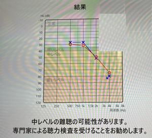

うるがいの話 ある日
最新: 補聴器を試す【うるがいの話 ある日】とは 一日だけのプログです
『うるがいの話』の最新一日だけのプログで、通信料が少なく経済的だ。カニの画像をクリックすると全ての日付が載る『うるがいの話』サイトを表示します
|
|
【うるがいの話】 うるがい(ｳﾙｶﾞｲ urugai)とは、『もずくがに』の名前でとても大きくなります。 |
|---|---|
|
|
【カミマヤーの話】 猫のことを方言でマヤーといいます。カミマヤー（kamimayaa）とは、神の猫のことです。 |
|
【たながぁの音楽】 たながぁ（ﾀﾅｶﾞｰ tanagaa）とは手長えびのことで、何種類かあり大きいのは車 エビぐらいになります。 |

|
【ぶながぁの話】 ぶながぁ(ﾌﾞﾅｶﾞｰ bunagaa)とは、赤い髪の毛、赤い身体、そして身長は１ｍ２０ｃｍ ぐらい、川の蟹を食べているの目撃された。場所は沖縄県国頭郡大宜味村のと ある村僕の隣近所に住んでいる爺さんから、聞いた話です。 |
|
|
【ギーマの話】 ギーマ(giima)とは、山原の里山に咲くスズランに似た、 花を付けます。実は食べられます、 気が付くと口の周りが紫になっています。 |
2025年03月05日 (水）補聴器を試す
16:56
５０万円の補聴器を試聴させてもらう。つけた途端、ノイズのよう
な隣のテーブルの人達の声が聞こえる。喋っていないる自分の声が
跳ね返ってくる、広告のとおりだ。補聴器の調整は、パソコンで行
っている、ブルートゥースで対応しているとのこと。いろいろ、質
問すると５年ほどで故障し、２万ほどの部品交換で対応、でもその
うち精密機械ですから壊れると。ホー、価格は２０万から１５０万
の範囲で、なるほど。やはり高い、そのうちお世話になりますと帰
る。
最近、キッチンタイマーの音が聞きとれなくなってきた。高い音が
かなり、聞こえない。ま、いずれ利用することになるだろう。
検査結果である、２０年前にすでに病院へ行きましたヨ
